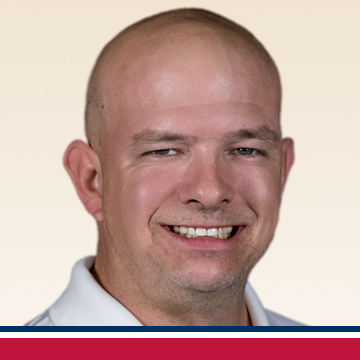

California
Fred Harris
San Diego, CA
Frederick brings strong people skills, discipline, and a service mindset to dog training after years in hospitality and nonprofit work supporting foster youth.
Search real trainers and locations from the current site, then book an evaluation with the right local professional.
Explore the complete verified trainer roster currently listed across the live site's ten state directories.
25 trainers shown
San Diego, CA
Frederick brings strong people skills, discipline, and a service mindset to dog training after years in hospitality and nonprofit work supporting foster youth.

North Park, CA
Genevieve “Skylar” Twilla combines lifelong animal passion with service-industry communication skills to help families build confidence and consistency.

Crestview, FL
Daniel, known as Deuce, brings hands-on discipline and a goal of becoming a leading Gulf Coast trainer through the LDTT system.

Milton, FL
Bayleigh's veterinary technician background and love of animals led her into LDTT training after seeing what professional structure could do.

Navarre, FL
Michael combines Air Force service, people skills, and personal experience with an aggressive dog to help families achieve better results.

Pensacola, FL
Clark brings real estate, marketing, and client-service experience to dog training, with a focus on building reliable dogs and confident owners.

Atlanta, GA
Shavon grew up around dogs and is driven by changing the way people understand misunderstood breeds and canine relationships.

Atlanta, GA
Christopher's breeder background and powerful LDTT evaluation experience pushed him toward professional training and family impact.

Atlanta, GA
Aryson brings veterinary clinic and dog daycare experience, plus a passion for helping owners see what training can change.

Atlanta, GA
Robert became passionate about LDTT after training his own dog, Leia, and now helps owners build stronger relationships with their dogs.

Atlanta, GA
Chloe's veterinary technician background and shelter experience shaped her mission to help save dogs through effective, compassionate training.

Hammond, IN
Jasmine draws from veterinary technology education and a balanced-training mindset to serve owners and dogs in Indiana.

Versailles, KY
Bailey became a trainer after LDTT helped her own dog, and now helps families learn to love and lead their dogs again.

Boston, MA
Emilio is a former Marine, college athlete, Master Trainer, and dog lover focused on building trainers and helping more families.

Ann Arbor, MI
Dylan brings lifelong dog experience, sales, and customer service skills to help owners understand dogs and the LDTT method.

Durham, NH
Tristan became inspired after seeing his own dog Sophie's progress and is committed to helping as many dogs as possible.

Cleveland, OH
Founder Lorenzo Miller built LDTT from childhood passion, professional study, and a mission of Serious Training. Serious Results.

Cleveland, OH
Eric leads Beckin' Call Dog Training under LDTT's proven methods and standards for personalized, serious training results.

Cleveland Heights, OH
Harley began as an LDTT client and now focuses on misunderstood dogs, large breeds, and aggression-related behavior challenges.

Cleveland, OH
JD is a Master Trainer with more than 700 dogs trained and experience in obedience, behavior, retrieval, scent, protection, therapy, and service work.

Reynoldsburg, OH
Shannon's no-kill shelter experience drives her mission to help dogs overcome obstacles and help families build better communication.

San Diego, CA
Karemela helps families build trust, improve communication, and create lasting relationships between dogs and their owners.

San Antonio, TX
Jacob brings Marine Corps discipline, sports medicine, personal training, and dog-industry experience into his LDTT work.

Fort Worth, TX
Eric's psychology background, wildlife work, and experience training his own German Shepherd led him to serve the Dallas/Fort Worth area.

San Antonio, TX
Carolina combines sales, personal training, and a love for animals to help dogs and families live together more happily.
Start with an evaluation so we can match the right trainer and program to your goals.